<!-- Copyright (c) 2022 8th Wall, Inc. -->
<!-- body.html is optional; elements will be added to your html body after app.js is loaded. -->

<div class="over">
  <span id="promptText"></span>
  
  
  <div id="gradient-box"></div>
</div>

<a-scene
  xrextras-gesture-detector
  landing-page
  xrextras-loading
  xrextras-runtime-error
  renderer="antialias: true; colorManagement: true; physicallyCorrectLights: true;"
  xrweb="allowedDevices: any"
>
  <a-camera
    id="camera"
    position="0 10 3"
    raycaster="objects: .cantap"
    cursor="fuse: false; rayOrigin: mouse;"
  >
  </a-camera>

  <a-entity
    light="type: directional;
             intensity: 0.8;
             castShadow: true;
             shadowMapHeight:2048;
             shadowMapWidth:2048;
             shadowCameraTop: 10;
             target: #holo;"
    xrextras-attach="target: holo; offset: 0 15 0;"
    shadow
  >
  </a-entity>

  <!--
      For inquiries regarding volumetric capture services, contact 
      Microsoft Mixed Reality Capture Studios at mrcs@microsoft.com
      
      MRCS holograms for this demo are located in the assets folder
      * FemalePresenter (contains sound) - ./assets/FemalePresenter.hcap
      * Soccer Player (no sound) - ./assets/Soccer.hcap
      
      You can upload your own HCAP files by dropping a .zip of your HCAP assets in the side panel or
      Assets + -> New asset bundle... -> HCAP file...
      
      If you are hosting your own HCAP files, reference the .hcap link in 'src' below
    -->
  <hcap-hologram
    id="holo"
    src="./assets/FemalePresenter.hcap"
    size="6"
    xrextras-hold-drag
    xrextras-two-finger-rotate
    xrextras-pinch-scale="scale: 6"
  >
  </hcap-hologram>

  <a-entity
    id="ground"
    class="cantap"
    geometry="primitive: box"
    material="shader: shadow; transparent: true; opacity: 0.4"
    scale="1000 2 1000"
    position="0 -1 0"
    shadow="cast: false"
  >
  </a-entity>
</a-scene>
